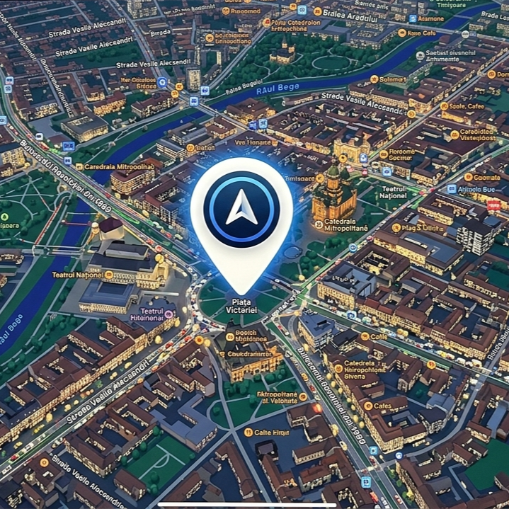

De obicei, atunci când schiez, merg cu mașina și mă cazez la o cabană din satul Islaz, în județul Alba. Acolo sunt mulți brazi, locuri de cazare, copii prietenoși și fericiți și foarte multă zăpadă, adică mormane de aproximativ un metru.
Eu schiez în localitatea Vârtop. Acolo sunt 2 pârtii:
-Vârtop II, fiind pârtie de nivel mediu;
-Vârtop I, fiind pârtie de nivel avansat, unde schiez cel mai des.
-Vârtop II, fiind pârtie de nivel mediu;
-Vârtop I, fiind pârtie de nivel avansat, unde schiez cel mai des.
Din fericire, zăpada se păstrează foarte bine, deoarece este adăpost. Razele soarelui nu pătrund atât de bine, temperatura scăzând uneori până la -15°C. BRRRR!
În apropiere, este și un restaurant, numit "Piatra Grăitoare". Mâncarea de acolo este foarte bună! De la restaurant poți închiria schiuri, clăpari și sănii.
De asemenea, în aceeași zonă sunt și multe tarabe cu tot felul de obiecte și bunătăți și pârtii special amenajate pentru săniuțe.
Locul în care schiez, dar până și unde stau este excelent!